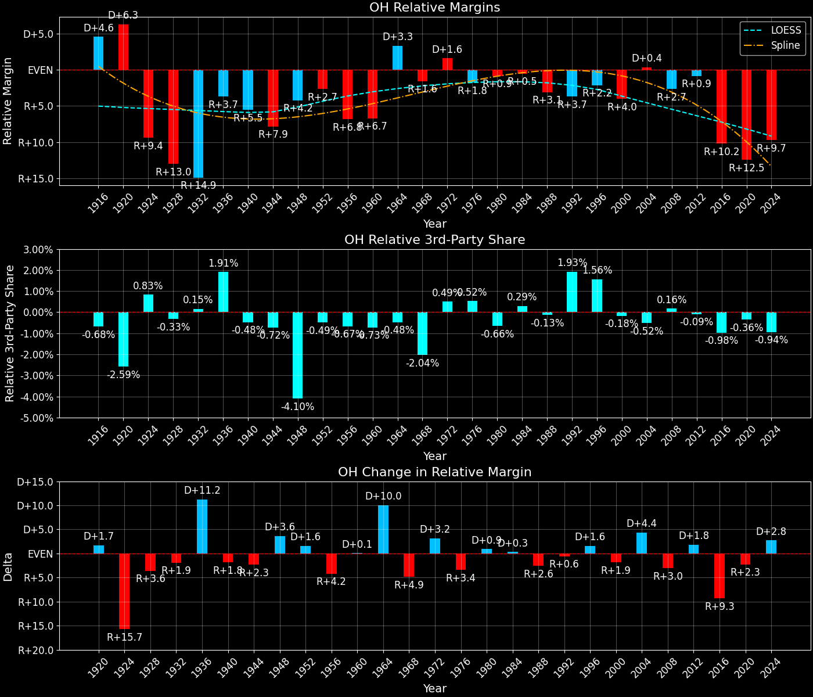
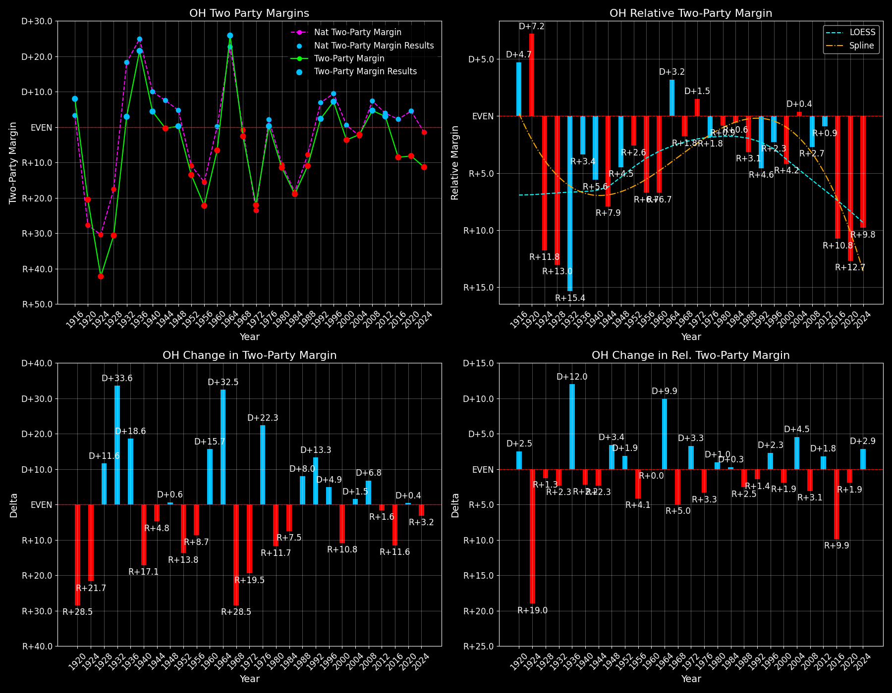

Ohio (OH) — Statewide

Margins · 3rd-Party share · Pres. deltas

Relative margins · Relative 3rd-Party · Rel. deltas
Ohio (OH) — Total Data
| Year | D | R | State Margin | Nat. Margin | Rel. Margin | Total votes | EVs |
|---|---|---|---|---|---|---|---|
| 1924 | 477,888(23.7%) | 1,176,130(58.3%) | R+34.6 | R+25.2 | R+9.4 | 2,016,237 | 24 |
| 1928 | 864,210(34.5%)(Δ 386,322) | 1,627,546(64.9%)(Δ 451,416) | R+30.4(Δ D+4.2) | R+17.4(Δ D+7.8) | R+13.0(Δ R+3.6) | 2,508,346(Δ 492,109) | 24 |
| 1932 | 1,301,695(49.9%)(Δ 437,485) | 1,227,319(47.0%)(Δ -400,227) | D+2.8(Δ D+33.3) | D+17.8(Δ D+35.2) | R+14.9(Δ R+1.9) | 2,609,728(Δ 101,382) | 26 |
| 1936 | 1,747,140(58.0%)(Δ 445,445) | 1,127,855(37.4%)(Δ -99,464) | D+20.6(Δ D+17.7) | D+24.3(Δ D+6.5) | R+3.7(Δ D+11.2) | 3,012,589(Δ 402,861) | 26 |
| 1940 | 1,733,139(52.2%)(Δ -14,001) | 1,586,773(47.8%)(Δ 458,918) | D+4.4(Δ R+16.1) | D+10.0(Δ R+14.3) | R+5.5(Δ R+1.8) | 3,319,912(Δ 307,323) | 26 |
| 1944 | 1,570,763(49.8%)(Δ -162,376) | 1,582,293(50.2%)(Δ -4,480) | R+0.4(Δ R+4.8) | D+7.5(Δ R+2.5) | R+7.9(Δ R+2.3) | 3,153,056(Δ -166,856) | 25 |
| 1948 | 1,452,791(49.5%)(Δ -117,972) | 1,445,684(49.2%)(Δ -136,609) | D+0.2(Δ D+0.6) | D+4.5(Δ R+3.0) | R+4.2(Δ D+3.6) | 2,936,071(Δ -216,985) | 25 |
| 1952 | 1,600,367(43.2%)(Δ 147,576) | 2,100,391(56.8%)(Δ 654,707) | R+13.5(Δ R+13.8) | R+10.9(Δ R+15.3) | R+2.7(Δ D+1.6) | 3,700,758(Δ 764,687) | 25 |
| 1956 | 1,439,655(38.9%)(Δ -160,712) | 2,262,610(61.1%)(Δ 162,219) | R+22.2(Δ R+8.7) | R+15.4(Δ R+4.5) | R+6.8(Δ R+4.2) | 3,702,265(Δ 1,507) | 25 |
| 1960 | 1,944,248(46.7%)(Δ 504,593) | 2,217,611(53.3%)(Δ -44,999) | R+6.6(Δ D+15.7) | D+0.2(Δ D+15.6) | R+6.7(Δ D+0.1) | 4,161,859(Δ 459,594) | 25 |
| 1964 | 2,498,331(62.9%)(Δ 554,083) | 1,470,865(37.1%)(Δ -746,746) | D+25.9(Δ D+32.5) | D+22.6(Δ D+22.4) | D+3.3(Δ D+10.0) | 3,969,196(Δ -192,663) | 26 |
| 1968 | 1,700,586(42.9%)(Δ -797,745) | 1,791,014(45.2%)(Δ 320,149) | R+2.3(Δ R+28.2) | R+0.7(Δ R+23.3) | R+1.6(Δ R+4.9) | 3,959,698(Δ -9,498) | 26 |
| 1972 | 1,558,889(38.1%)(Δ -141,697) | 2,441,827(59.6%)(Δ 650,813) | R+21.6(Δ R+19.3) | R+23.1(Δ R+22.4) | D+1.6(Δ D+3.2) | 4,094,787(Δ 135,089) | 25 |
| 1976 | 2,011,621(48.9%)(Δ 452,732) | 2,000,505(48.7%)(Δ -441,322) | D+0.3(Δ D+21.8) | D+2.1(Δ D+25.2) | R+1.8(Δ R+3.4) | 4,111,873(Δ 17,086) | 25 |
| 1980 | 1,752,414(40.9%)(Δ -259,207) | 2,206,545(51.5%)(Δ 206,040) | R+10.6(Δ R+10.9) | R+9.7(Δ R+11.8) | R+0.9(Δ D+0.9) | 4,283,603(Δ 171,730) | 25 |
| 1984 | 1,825,440(40.1%)(Δ 73,026) | 2,678,560(58.9%)(Δ 472,015) | R+18.8(Δ R+8.2) | R+18.2(Δ R+8.5) | R+0.5(Δ D+0.3) | 4,547,619(Δ 264,016) | 23 |
| 1988 | 1,939,629(44.1%)(Δ 114,189) | 2,416,549(55.0%)(Δ -262,011) | R+10.9(Δ D+7.9) | R+7.7(Δ D+10.5) | R+3.1(Δ R+2.6) | 4,393,699(Δ -153,920) | 23 |
| 1992 | 1,984,942(40.2%)(Δ 45,313) | 1,894,310(38.3%)(Δ -522,239) | D+1.8(Δ D+12.7) | D+5.6(Δ D+13.3) | R+3.7(Δ R+0.6) | 4,939,964(Δ 546,265) | 21 |
| 1996 | 2,148,222(47.4%)(Δ 163,280) | 1,859,883(41.0%)(Δ -34,427) | D+6.4(Δ D+4.5) | D+8.5(Δ D+3.0) | R+2.2(Δ D+1.6) | 4,534,434(Δ -405,530) | 21 |
| 2000 | 2,186,190(46.5%)(Δ 37,968) | 2,351,209(50.0%)(Δ 491,326) | R+3.5(Δ R+9.9) | D+0.5(Δ R+8.0) | R+4.0(Δ R+1.9) | 4,705,457(Δ 171,023) | 21 |
| 2004 | 2,741,167(48.7%)(Δ 554,977) | 2,859,768(50.8%)(Δ 508,559) | R+2.1(Δ D+1.4) | R+2.5(Δ R+3.0) | D+0.4(Δ D+4.4) | 5,627,908(Δ 922,451) | 20 |
| 2008 | 2,940,044(51.5%)(Δ 198,877) | 2,677,820(46.9%)(Δ -181,948) | D+4.6(Δ D+6.7) | D+7.3(Δ D+9.7) | R+2.7(Δ R+3.0) | 5,708,350(Δ 80,442) | 20 |
| 2012 | 2,827,709(50.7%)(Δ -112,335) | 2,661,437(47.7%)(Δ -16,383) | D+3.0(Δ R+1.6) | D+3.9(Δ R+3.4) | R+0.9(Δ D+1.8) | 5,580,847(Δ -127,503) | 18 |
| 2016 | 2,394,164(43.6%)(Δ -433,545) | 2,841,005(51.7%)(Δ 179,568) | R+8.1(Δ R+11.1) | D+2.1(Δ R+1.8) | R+10.2(Δ R+9.3) | 5,496,487(Δ -84,360) | 18 |
| 2020 | 2,679,165(45.2%)(Δ 285,001) | 3,154,834(53.3%)(Δ 313,829) | R+8.0(Δ D+0.1) | D+4.5(Δ D+2.4) | R+12.5(Δ R+2.3) | 5,922,202(Δ 425,715) | 18 |
| 2024 | 2,533,699(43.9%)(Δ -145,466) | 3,180,116(55.1%)(Δ 25,282) | R+11.2(Δ R+3.2) | R+1.5(Δ R+5.9) | R+9.7(Δ D+2.8) | 5,767,788(Δ -154,414) | 17 |
Column explanations
- Δ
- Change (delta) in the value from the previous election year.
- Year
- Election year.
- D
- Number of votes for the Democratic candidate (raw count(pct%)).
- R
- Number of votes for the Republican candidate (raw count(pct%)).
- State Margin
- Margin between the two major-party candidates, including third-party votes ((D - R)/total).
- Nat. Margin
- The national presidential margin for that year, including third-party votes ((D_total - R_total)/total_votes).
- Rel. Margin
- The presidential margin relative to the national presidential margin (Margin - Nat. Margin).
- Total votes
- Total voter turnout or ballots cast (when provided).
- EVs
- Number of electoral votes allocated to this state or unit.
Ohio (OH) — Third-Party Data
| Year | D | R | Other votes | State 3rd-Party Share | 3rd-Party Nat. Share | 3rd-Party Rel. Share |
|---|---|---|---|---|---|---|
| 1924 | 477,888(23.7%) | 1,176,130(58.3%) | 362,219(18.0%) | 17.97% | 17.14% | 0.83% |
| 1928 | 864,210(34.5%)(Δ 386,322) | 1,627,546(64.9%)(Δ 451,416) | 16,590(0.7%) | 0.66% | 0.99% | -0.33% |
| 1932 | 1,301,695(49.9%)(Δ 437,485) | 1,227,319(47.0%)(Δ -400,227) | 80,714(3.1%) | 3.09% | 2.94% | 0.15% |
| 1936 | 1,747,140(58.0%)(Δ 445,445) | 1,127,855(37.4%)(Δ -99,464) | 137,594(4.6%) | 4.57% | 2.66% | 1.91% |
| 1940 | 1,733,139(52.2%)(Δ -14,001) | 1,586,773(47.8%)(Δ 458,918) | 0(0.0%) | 0.00% | 0.48% | -0.48% |
| 1944 | 1,570,763(49.8%)(Δ -162,376) | 1,582,293(50.2%)(Δ -4,480) | 0(0.0%) | 0.00% | 0.72% | -0.72% |
| 1948 | 1,452,791(49.5%)(Δ -117,972) | 1,445,684(49.2%)(Δ -136,609) | 37,596(1.3%) | 1.28% | 5.38% | -4.10% |
| 1952 | 1,600,367(43.2%)(Δ 147,576) | 2,100,391(56.8%)(Δ 654,707) | 0(0.0%) | 0.00% | 0.49% | -0.49% |
| 1956 | 1,439,655(38.9%)(Δ -160,712) | 2,262,610(61.1%)(Δ 162,219) | 0(0.0%) | 0.00% | 0.67% | -0.67% |
| 1960 | 1,944,248(46.7%)(Δ 504,593) | 2,217,611(53.3%)(Δ -44,999) | 0(0.0%) | 0.00% | 0.73% | -0.73% |
| 1964 | 2,498,331(62.9%)(Δ 554,083) | 1,470,865(37.1%)(Δ -746,746) | 0(0.0%) | 0.00% | 0.48% | -0.48% |
| 1968 | 1,700,586(42.9%)(Δ -797,745) | 1,791,014(45.2%)(Δ 320,149) | 468,098(11.8%) | 11.82% | 13.86% | -2.04% |
| 1972 | 1,558,889(38.1%)(Δ -141,697) | 2,441,827(59.6%)(Δ 650,813) | 94,071(2.3%) | 2.30% | 1.80% | 0.49% |
| 1976 | 2,011,621(48.9%)(Δ 452,732) | 2,000,505(48.7%)(Δ -441,322) | 99,747(2.4%) | 2.43% | 1.90% | 0.52% |
| 1980 | 1,752,414(40.9%)(Δ -259,207) | 2,206,545(51.5%)(Δ 206,040) | 324,644(7.6%) | 7.58% | 8.24% | -0.66% |
| 1984 | 1,825,440(40.1%)(Δ 73,026) | 2,678,560(58.9%)(Δ 472,015) | 43,619(1.0%) | 0.96% | 0.67% | 0.29% |
| 1988 | 1,939,629(44.1%)(Δ 114,189) | 2,416,549(55.0%)(Δ -262,011) | 37,521(0.9%) | 0.85% | 0.98% | -0.13% |
| 1992 | 1,984,942(40.2%)(Δ 45,313) | 1,894,310(38.3%)(Δ -522,239) | 1,060,712(21.5%) | 21.47% | 19.55% | 1.93% |
| 1996 | 2,148,222(47.4%)(Δ 163,280) | 1,859,883(41.0%)(Δ -34,427) | 526,329(11.6%) | 11.61% | 10.05% | 1.56% |
| 2000 | 2,186,190(46.5%)(Δ 37,968) | 2,351,209(50.0%)(Δ 491,326) | 168,058(3.6%) | 3.57% | 3.75% | -0.18% |
| 2004 | 2,741,167(48.7%)(Δ 554,977) | 2,859,768(50.8%)(Δ 508,559) | 26,973(0.5%) | 0.48% | 1.00% | -0.52% |
| 2008 | 2,940,044(51.5%)(Δ 198,877) | 2,677,820(46.9%)(Δ -181,948) | 90,486(1.6%) | 1.59% | 1.42% | 0.16% |
| 2012 | 2,827,709(50.7%)(Δ -112,335) | 2,661,437(47.7%)(Δ -16,383) | 91,701(1.6%) | 1.64% | 1.73% | -0.09% |
| 2016 | 2,394,164(43.6%)(Δ -433,545) | 2,841,005(51.7%)(Δ 179,568) | 261,318(4.8%) | 4.75% | 5.73% | -0.98% |
| 2020 | 2,679,165(45.2%)(Δ 285,001) | 3,154,834(53.3%)(Δ 313,829) | 88,203(1.5%) | 1.49% | 1.84% | -0.36% |
| 2024 | 2,533,699(43.9%)(Δ -145,466) | 3,180,116(55.1%)(Δ 25,282) | 53,973(0.9%) | 0.94% | 1.88% | -0.94% |
Column explanations
- Year
- Election year.
- D
- Number of votes for the Democratic candidate (raw count(pct%)).
- R
- Number of votes for the Republican candidate (raw count(pct%)).
- Other votes
- Number of votes for third-party (other) candidates (raw count(pct%)).
- State 3rd-Party Share
- Share of the vote received by third-party (other) candidates.
- 3rd-Party Nat. Share
- The national third-party share for that year (3rd-Party votes / total votes).
- 3rd-Party Rel. Share
- Third-party share relative to the national third-party share (3rd-Party share - Nat. 3rd-Party share).

Two-party margins · relative · deltas
Ohio (OH) — Two-Party Data
| Year | D | R | 2-Party Margin | 2-Party Nat. Margin | 2-Party Rel. Margin | EVs |
|---|---|---|---|---|---|---|
| 1924 | 477,888(28.9%) | 1,176,130(71.1%) | R+42.2 | R+30.4 | R+11.8 | 24 |
| 1928 | 864,210(34.7%)(Δ 386,322) | 1,627,546(65.3%)(Δ 451,416) | R+30.6(Δ D+11.6) | R+17.6(Δ D+12.8) | R+13.0(Δ R+1.3) | 24 |
| 1932 | 1,301,695(51.5%)(Δ 437,485) | 1,227,319(48.5%)(Δ -400,227) | D+2.9(Δ D+33.6) | D+18.3(Δ D+35.9) | R+15.4(Δ R+2.3) | 26 |
| 1936 | 1,747,140(60.8%)(Δ 445,445) | 1,127,855(39.2%)(Δ -99,464) | D+21.5(Δ D+18.6) | D+24.9(Δ D+6.6) | R+3.4(Δ D+12.0) | 26 |
| 1940 | 1,733,139(52.2%)(Δ -14,001) | 1,586,773(47.8%)(Δ 458,918) | D+4.4(Δ R+17.1) | D+10.0(Δ R+14.9) | R+5.6(Δ R+2.2) | 26 |
| 1944 | 1,570,763(49.8%)(Δ -162,376) | 1,582,293(50.2%)(Δ -4,480) | R+0.4(Δ R+4.8) | D+7.5(Δ R+2.5) | R+7.9(Δ R+2.3) | 25 |
| 1948 | 1,452,791(50.1%)(Δ -117,972) | 1,445,684(49.9%)(Δ -136,609) | D+0.2(Δ D+0.6) | D+4.7(Δ R+2.8) | R+4.5(Δ D+3.4) | 25 |
| 1952 | 1,600,367(43.2%)(Δ 147,576) | 2,100,391(56.8%)(Δ 654,707) | R+13.5(Δ R+13.8) | R+10.9(Δ R+15.6) | R+2.6(Δ D+1.9) | 25 |
| 1956 | 1,439,655(38.9%)(Δ -160,712) | 2,262,610(61.1%)(Δ 162,219) | R+22.2(Δ R+8.7) | R+15.5(Δ R+4.6) | R+6.7(Δ R+4.1) | 25 |
| 1960 | 1,944,248(46.7%)(Δ 504,593) | 2,217,611(53.3%)(Δ -44,999) | R+6.6(Δ D+15.7) | D+0.2(Δ D+15.7) | R+6.7(Δ R+0.0) | 25 |
| 1964 | 2,498,331(62.9%)(Δ 554,083) | 1,470,865(37.1%)(Δ -746,746) | D+25.9(Δ D+32.5) | D+22.7(Δ D+22.5) | D+3.2(Δ D+9.9) | 26 |
| 1968 | 1,700,586(48.7%)(Δ -797,745) | 1,791,014(51.3%)(Δ 320,149) | R+2.6(Δ R+28.5) | R+0.8(Δ R+23.5) | R+1.8(Δ R+5.0) | 26 |
| 1972 | 1,558,889(39.0%)(Δ -141,697) | 2,441,827(61.0%)(Δ 650,813) | R+22.1(Δ R+19.5) | R+23.6(Δ R+22.8) | D+1.5(Δ D+3.3) | 25 |
| 1976 | 2,011,621(50.1%)(Δ 452,732) | 2,000,505(49.9%)(Δ -441,322) | D+0.3(Δ D+22.3) | D+2.1(Δ D+25.7) | R+1.8(Δ R+3.3) | 25 |
| 1980 | 1,752,414(44.3%)(Δ -259,207) | 2,206,545(55.7%)(Δ 206,040) | R+11.5(Δ R+11.7) | R+10.6(Δ R+12.7) | R+0.9(Δ D+1.0) | 25 |
| 1984 | 1,825,440(40.5%)(Δ 73,026) | 2,678,560(59.5%)(Δ 472,015) | R+18.9(Δ R+7.5) | R+18.3(Δ R+7.7) | R+0.6(Δ D+0.3) | 23 |
| 1988 | 1,939,629(44.5%)(Δ 114,189) | 2,416,549(55.5%)(Δ -262,011) | R+10.9(Δ D+8.0) | R+7.8(Δ D+10.5) | R+3.1(Δ R+2.5) | 23 |
| 1992 | 1,984,942(51.2%)(Δ 45,313) | 1,894,310(48.8%)(Δ -522,239) | D+2.3(Δ D+13.3) | D+6.9(Δ D+14.7) | R+4.6(Δ R+1.4) | 21 |
| 1996 | 2,148,222(53.6%)(Δ 163,280) | 1,859,883(46.4%)(Δ -34,427) | D+7.2(Δ D+4.9) | D+9.5(Δ D+2.6) | R+2.3(Δ D+2.3) | 21 |
| 2000 | 2,186,190(48.2%)(Δ 37,968) | 2,351,209(51.8%)(Δ 491,326) | R+3.6(Δ R+10.8) | D+0.5(Δ R+8.9) | R+4.2(Δ R+1.9) | 21 |
| 2004 | 2,741,167(48.9%)(Δ 554,977) | 2,859,768(51.1%)(Δ 508,559) | R+2.1(Δ D+1.5) | R+2.5(Δ R+3.0) | D+0.4(Δ D+4.5) | 20 |
| 2008 | 2,940,044(52.3%)(Δ 198,877) | 2,677,820(47.7%)(Δ -181,948) | D+4.7(Δ D+6.8) | D+7.4(Δ D+9.9) | R+2.7(Δ R+3.1) | 20 |
| 2012 | 2,827,709(51.5%)(Δ -112,335) | 2,661,437(48.5%)(Δ -16,383) | D+3.0(Δ R+1.6) | D+3.9(Δ R+3.4) | R+0.9(Δ D+1.8) | 18 |
| 2016 | 2,394,164(45.7%)(Δ -433,545) | 2,841,005(54.3%)(Δ 179,568) | R+8.5(Δ R+11.6) | D+2.2(Δ R+1.7) | R+10.8(Δ R+9.9) | 18 |
| 2020 | 2,679,165(45.9%)(Δ 285,001) | 3,154,834(54.1%)(Δ 313,829) | R+8.2(Δ D+0.4) | D+4.5(Δ D+2.3) | R+12.7(Δ R+1.9) | 18 |
| 2024 | 2,533,699(44.3%)(Δ -145,466) | 3,180,116(55.7%)(Δ 25,282) | R+11.3(Δ R+3.2) | R+1.5(Δ R+6.0) | R+9.8(Δ D+2.9) | 17 |
Column explanations
- Δ
- Change (delta) in the value from the previous election year.
- Year
- Election year.
- D
- Number of votes for the Democratic candidate (raw count(pct%)).
- R
- Number of votes for the Republican candidate (raw count(pct%)).
- 2-Party Margin
- Margin between the two major-party candidates, ignoring third-party votes ((D - R)/(D + R)).
- 2-Party Nat. Margin
- The national presidential margin for that year, including third-party votes ((D_total - R_total)/total_votes).
- 2-Party Rel. Margin
- The presidential margin relative to the national presidential margin (Margin - Nat. Margin).
- EVs
- Number of electoral votes allocated to this state or unit.